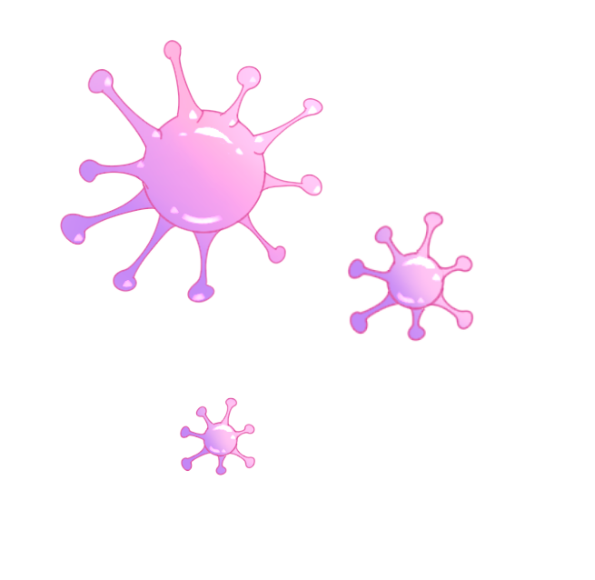

우리의 건강의 위협하는 바이러스와 균
예방접종이 필요한 감염병 바이러스와 균을 소개합니다. 증상이 같거나 아직 예방접종을 안했다면 가까운 보건소나 의료기관을 방문하세요.
나의 건강관리

인플루엔자
어떻게 전파되나요?
급성 인플루엔자 환자가 기침이나재채기를 할 때 분비되는 호흡기 비말을 통해서 사람에서 사람으로 전파됩니다.
증상은 무엇인가요?
갑작스러운 발열(38℃ 이상)두통, 근육통 등의 전신 증상과마른기침, 인후통, 코막힘 등이 인플루엔자의 흔한 증상입니다.
인플루엔자의 치료는 어떻게 하나요?
안정을 취하고 수분섭취, 필요에 따라해열진통제 등을 사용하는 대증요법으로충분히 호전됩니다.
장티푸스균
어떻게 전파되나요?
오염된 식수나 음식을 섭취 시 감염이 되며 오염된 하천에서 자란 갑각류나 어패류, 배설물이 묻은 과일 등을 통해 감염됩니다.
증상은 무엇인가요?
3~60일(평균 8~14일) 정도의 잠복기를 지나 환자는 지속적인 발열과 두통, 오한, 권태 등이 나타납니다. 어린 소아에서는 설사가 나타나는 반면, 성인은 변비도 나타날 수 있습니다.

파상풍균
어떻게 전파되나요?
신체 접촉이나 호흡기를 통해 사람에서 사람으로 전파됩니다.
증상은 무엇인가요?
가장 흔한 발생부위는 인후와 편도이며 초기에는 피로, 인두통, 어지러움 식욕감퇴, 미열의 증상을 보입니다. 합병증은 심근염과 신경염이며 종종 치명적일 수 있습니다.